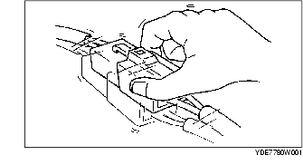

DEPISTAGE DES PANNES DE PROBLEMES INTERMITTENTS
B3E090358000W02
Méthode de vibration
• Lorsqu'une anomalie survient ou empire lors de la conduite sur route accidentée, ou lorsque le moteur vibre, effectuer les étapes suivantes :
-
Remarque
-
• Il existe plusieurs raisons pour que des vibrations du moteur ou du véhicule entraînent une anomalie électrique. Certains des points à vérifier sont les suivants :
-
- Connecteurs pas complètement fixés.
-
- Faisceaux de câblage ne disposant pas d'un jeu complet.
-
- Câbles en travers des supports ou pièces mobiles.
-
- Câbles cheminant trop près de pièces chaudes.
-
• Un faisceau mal placé, mal fixé ou desserré peut amener des câbles à se coincer entre les pièces.
-
• Les raccords de connecteur, les points de vibration, et les endroits où les faisceaux de câblage passent à travers la paroi pare-feu et les panneaux de carrosserie, sont les principaux emplacements à vérifier.
-
• Vérifier les DTC ou les anomalies en secouant légèrement les faisceaux de câblage et les connecteurs suspectés d'être à l'origine de l'anomalie.

Méthode de vérification des bornes de connecteur
1. Vérifier l'état de la connexion de chaque borne femelle.
2. Insérer la borne mâle dans la borne femelle pour vérifier la fixation.